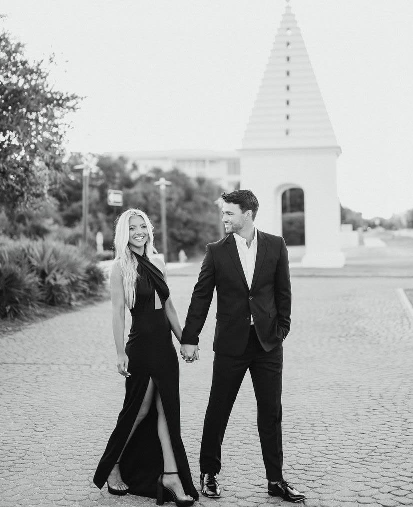
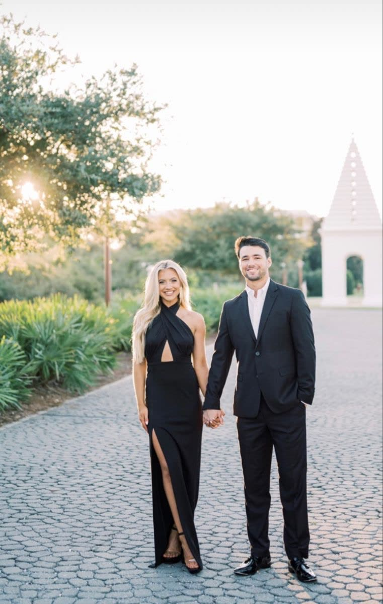

Il giorno — 02
Villa Il Garofalo, Fiesole
Ci sposiamo tra gli ulivi sopra Firenze, nella villa che ci ha ospitato la prima volta che abbiamo guardato la città dal colle. La cerimonia è in giardino alle 15:00; da lì non ci si sposta: aperitivo, cena e ballo restano sotto le stesse stelle.
Arrivate con calma. C’è ombra, acqua fresca e un posto per ogni invito. Se il temporale di giugno decidesse di farsi vivo, la cerimonia si sposta nel salone affacciato sulla valle — stesse parole, stesso sì.

Verso la villa

Il viale
Sabato 5 giugno
Un solo luogo, tutta la festa
Come arrivare
Firenze · Fiesole
In auto
Dall’A1 uscite a Firenze Sud e seguite le indicazioni per Fiesole. In villa c’è un parcheggio riservato agli ospiti; vi chiediamo di occupare i posti segnalati e di lasciare liberi i viali per chi arriva dopo le 14:30.
Da Firenze
L’autobus ATAF n. 7 parte da Piazza San Marco e arriva in piazza Mino a Fiesole in circa 25 minuti. Da lì sono otto minuti a piedi verso Via del Garofalo. I taxi dal centro impiegano un quarto d’ora fuori dall’ora di punta.
In aereo
L’aeroporto di Firenze Peretola è a 40 minuti di auto. Pisa è un’ora e un quarto, con treni frequenti per Santa Maria Novella. Se arrivate il venerdì, scriveteci: mettiamo in contatto chi ha posti liberi in macchina.
Dormire
Abbiamo tenuto alcune camere a Fiesole e in Oltrarno fino al 15 aprile. Se vi serve un consiglio, scrivete a lorenzo.giulia@esempio.it — vi indichiamo cosa è rimasto e cosa conviene prenotare per conto vostro.